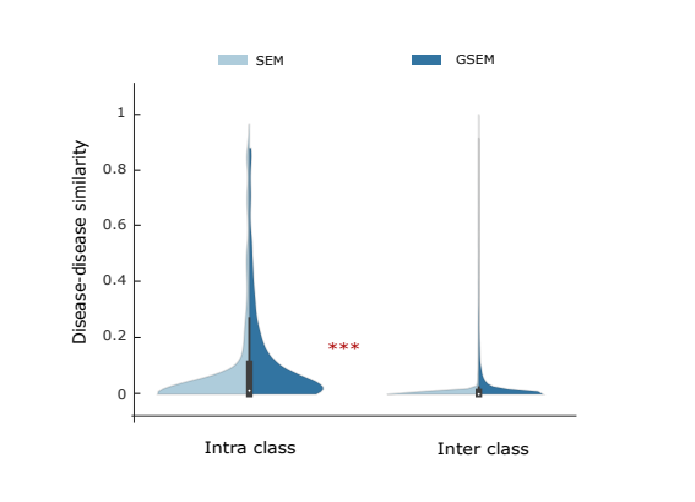
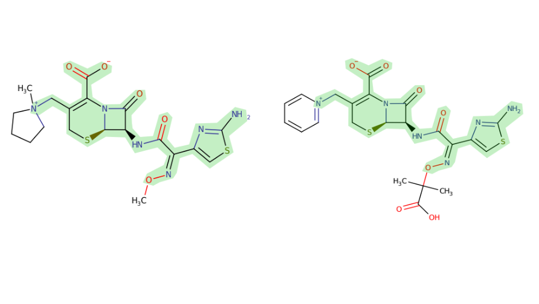

Diego Galeano, Ph.D., Eng.
I am a Machine Learning Researcher at the Faculty of Engineering, National University of Asunción, Paraguay. I am also a consultant for the biotech/pharma industry in the U.S.
I develop machine learning models for applications in drug discovery and medicine.
Recent news
- July 2023 I presented my research at the 14th Congreso Paraguayo de Infectologia - Simposio Virologia II
- July 2023 I was invited by CONACyt in a debate about Artificial Intelligence in Paraguay at the Science Expo!
- June 2023 I was invited as speaker to N3C
- March 2023 I was invited to give research talks at Khipu! So fun to connect with so many researchers and students in South America .
2022
|
|
Machine learning and network medicine approaches for drug repositioning for COVID-19
Suzana de Siqueira Santos, Mateo Torres, Diego Galeano, María del Mar Sánchez, Luca Cernuzzi, Alberto Paccanaro Cell Patterns 2022. |
2021
|
|
A Recommender System Approach for Predicting Effective Antivirals
Rafael Adorno, Diego Galeano, DH Stalder, Luca Cernuzzi, Alberto Paccanaro 2021 XLVII Latin American Computing Conference (CLEI), IEEE 2021. |
|
|
Role of miR-2392 in driving SARS-CoV-2 infection
JT McDonald, FJ Enguita, ..., Diego Galeano, Alberto Paccanaro, ... and Afshin Beheshti, UNC COVID-19 Pathobiology Consortium Cell Reports 2021. |
|
|
The Great Deceiver: miR-2392’s Hidden Role in Driving SARS-CoV-2 Infection
JT McDonald, FJ Enguita, ..., Diego Galeano, Alberto Paccanaro, ... and Afshin Beheshti, UNC COVID-19 Pathobiology Consortium bioRxiv 2021. |
|
|
Interpretable Drug Target Predictions using Self-Expressiveness
Diego Galeano, Santiago Noto, Ruben Jimenez and Alberto Paccanaro bioRxiv 2021. |
2020
|
|
Predicting the Frequencies of Drug Side Effects
Diego Galeano, Shantao Li, Mark Gerstein and Alberto Paccanaro Nature Communications 2020. |
2019
|
|
Predicting the Frequencies of Drug Side Effects
Diego A. Galeano, and Alberto Paccanaro Preprint 2019. (bioarxiv) |
|

|
Learning Interpretable Disease Self-Representations for Drug Repositioning
(co-first author*) Fabrizio Frasca*, Diego A. Galeano*, Guadalupe Gonzalez, Ivan Laponogov, Kirill Veselkov, Alberto Paccanaro, Michael M Bronstein NeurIPS Graph Representation Learning Workshop. 2019. pdf (arxiv) |
|
|
The Geometric Sparse Matrix Completion Model for Predicting Drug Side effects
Diego A. Galeano, Alberto Paccanaro Preprint. 2019. (bioarxiv) |
2018
|
|
A recommender system approach for predicting drug side effects
Diego A. Galeano, and Alberto Paccanaro IJCNN. 2018. (IEEE Xplore) |
2017
|
|
Mining the Biomedical Literature to predict shared drug targets in drugbank
(co-first author*) Horacio Caniza*, Diego A. Galeano*, and Alberto Paccanaro IEEE-CLEI. 2017. (IEEE Xplore) |
2016
|

|
Drug targets prediction using chemical similarity
Diego A. Galeano, and Alberto Paccanaro IEEE-CLEI. 2016. |
2015
|
|
Posturography Platform and Balance Control Training and Research System Based on FES and Muscle Synergies
Diego A. Galeano, Fernando Brunetti, Diego Torricelli, S. Piazza, JLP Rovira Springer Series in Computational Neuroscience (book). 2015. |
2014

|
A tool for balance control training using muscle synergies and multimodal interfaces
Diego A. Galeano, F. Brunetti, D. Torricelli, S. Piazza, JLP Rovira BioMed research international (Hindawi) 2014. |
2013
|
|
A low cost platform based on FES and muscle synergies for postural control research and rehabilitation
Diego A. Galeano, F. Brunetti, S. Piazza, D. Torricelli NEUROTECHNIX 2013. |
1 - Machine Learning for Space Biology

2 - Predicting the frequencies of drug side effects
2 - Extending the druggable genome
Diego Galeano is a Machine Learning Researcher at the Facultad de Ingenieria, Universidad Nacional de Asuncion (FIUNA), in Paraguay. Diego completed his Ph.D. at Royal Holloway, University of London in 2019, working under the supervision of Prof. Alberto Paccanaro. Diego also was Postdoctoral Researcher in Data Science at Fundação Getulio Vargas (FGV) Rio de Janeiro, Brasil in 2020-2021. Diego received a full-ride ITAIPU scholarship for undergraduate studies in Paraguay, and in 2015, the BECAL scholarship for his doctoral studies in London. Diego was a research fellow of GersteinLab at Yale University in 2017, where he worked in model interpretability and enhancer prediction. This research visit was thanks to the Royal Holloway Travel Award, the Santander Travel Award and the BECAL Travel Award. He also received the best poster and presentation awards for three years at the Annual Computer Science Colloquium at Royal Holloway. His interests lie in applications of AI and machine learning in healthcare, biology and medicine. He is also interested in the social impact of AI.